Project 2.12.1: TRAFFIC LIGHT with STEMAIDE
| Description | You will learn how to detect the presence or absence of light. |
|---|---|
| Use case | Controlling visibility of light in streetlights at different times of the day. |
Components (Things You will need)
 |
 |
 |
 |
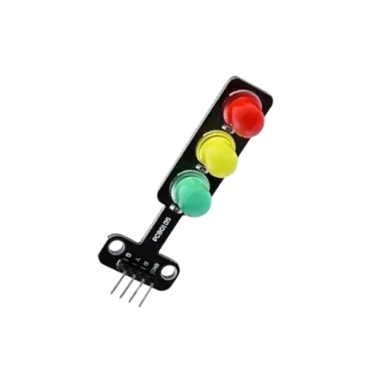 |
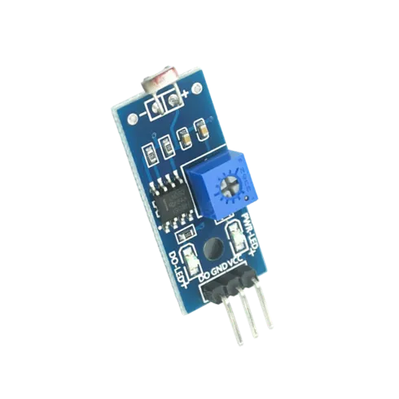 |
|---|---|---|---|---|---|
Building the circuit
Things Needed:
- Arduino Uno = 1
- Arduino USB cable = 1
- Light dependent resistor = 1
- Traffic module= 1
- Red jumper wire = 1
- Black jumper wire = 1
- Green jumper wire = 2
- Brown jumper wire = 1
- Purple jumper wire = 1
- Yellow jumper wire = 1
- Orange jumper wire = 1
Mounting the component on the breadboard
Step 1: Take the light-dependent resistor and the breadboard and insert the light-dependent resistor into the horizontal connectors on the breadboard.
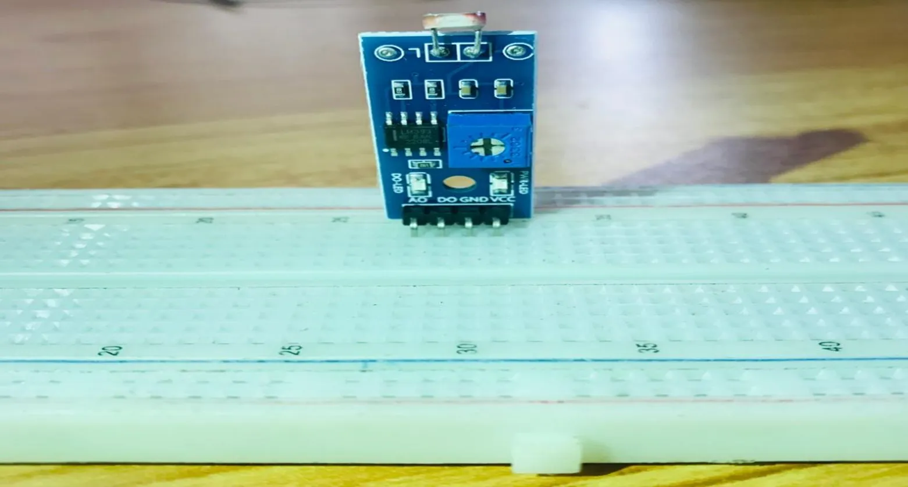
Step 2: Take the traffic light and insert it into the horizontal connectors on the breadboard.
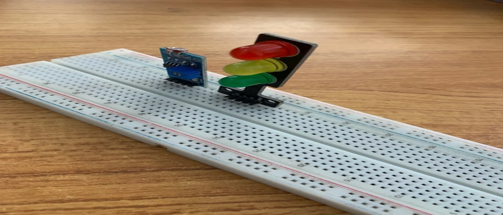
WIRING THE COMPONENTS
Step 1: Take the green jumper wire. Connect one end of the wire to the “VCC” port on the resistor and the other end to the “5V” port on the Arduino UNO.
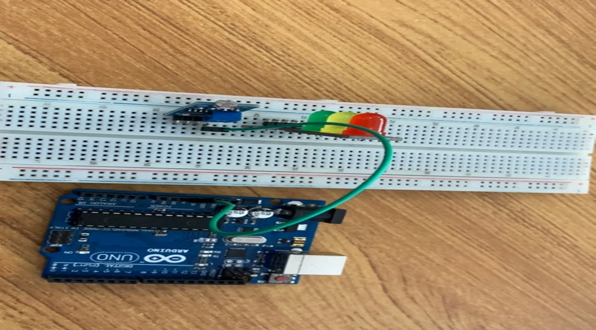
Step 2: Take the purple jumper wire. Connect one end of the wire to the “GND” hole on the Arduino UNO and the other end to the “GND” port on the resistor.
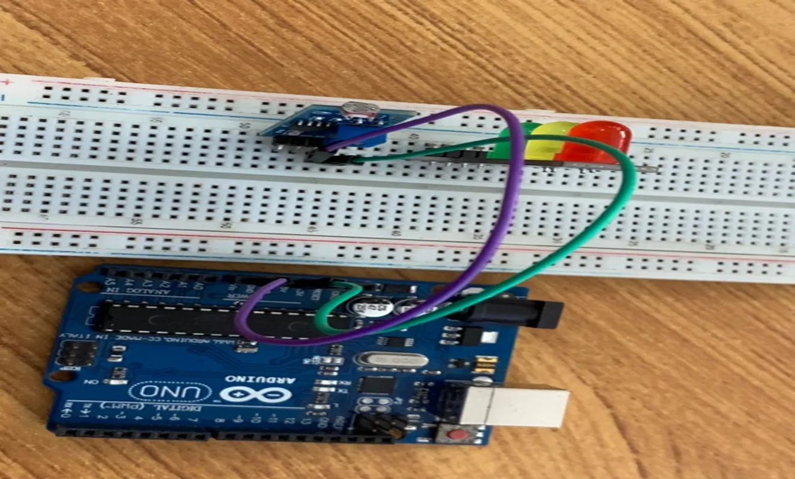
Step 3: Take the black jumper wire. Connect one end of the wire to the “DO” hole on the resistor and the other end to hole number 8 on the Arduino UNO.
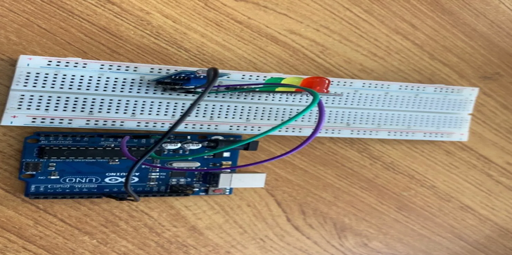
Step 4: Take the brown jumper wire. Connect one end of the wire to the “AO” port on the Arduino UNO to the “AO” port on the resistor.
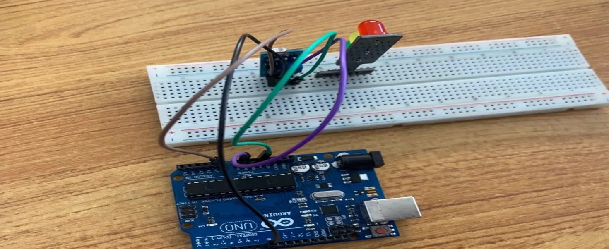
Step 5:Take the orange jumper wire. Connect one end of the wire to the port labelled “R” on the traffic light and connect the other end to digital pin 5 on the Arduino UNO.
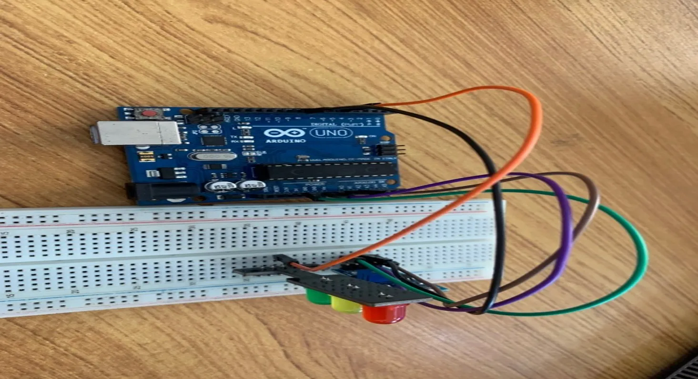
Step 6: Take the green jumper wire. Connect one end of the wire to the port labelled “Y” on the traffic light and connect the other end to digital pin 6 on the Arduino UNO.
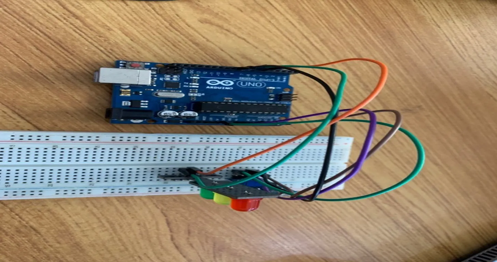
Step 7: Take the yellow jumper wire. Connect one end of the wire to the port labelled “G” on the traffic light and connect the other end to digital pin 7 on the Arduino UNO.
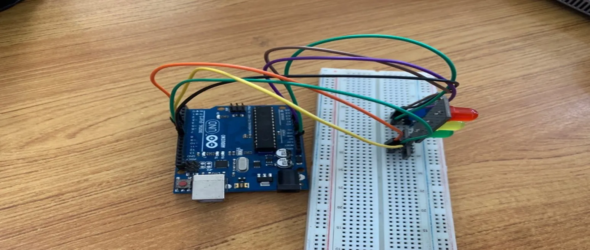
Step 8: Take the red jumper wire. Connect one end of the wire to the port labelled “GND” on the traffic light and connect the other end to the “GND” on the Arduino UNO.
Step 9: Take the yellow jumper wire. Connect one end of the wire to the port labelled “G” on the traffic light and connect the other end to digital pin 7 on the Arduino UNO.
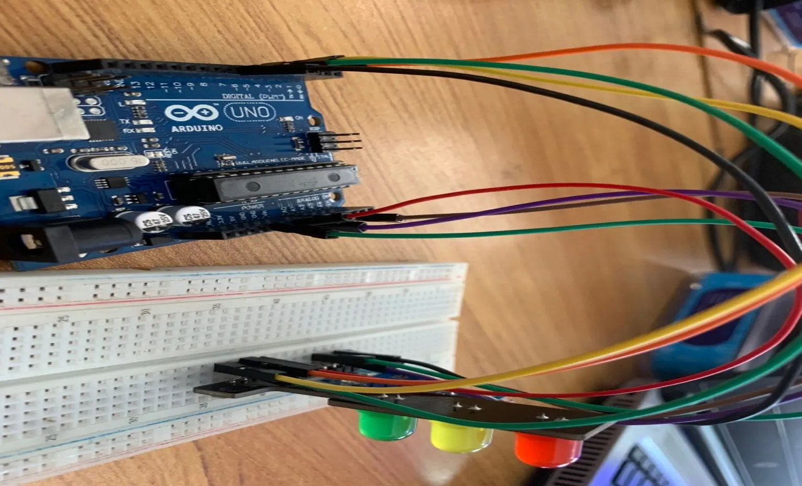
PROGRAMMING
Step 1: Open your Arduino IDE. See how to set up here: Getting Started.
Step 2: Type const int LDR_PIN = A0; as shown below in the image
NB: Make sure you avoid errors when typing. Do not omit any character or symbol especially the bracket { } and semicolons ; and place them as you see in the image . The code that comes after the two ash backslashes “//” are called comments. They are not part of the code that will be run, they only explain the lines of code. You can avoid typing them.
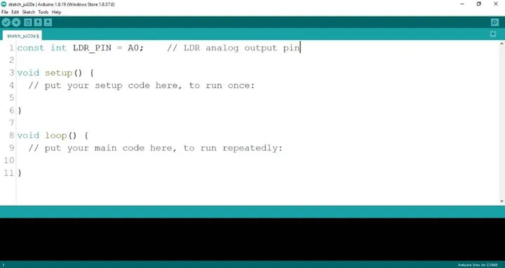
Step 3: Type const int DO_PIN = 8; as shown below in the image.
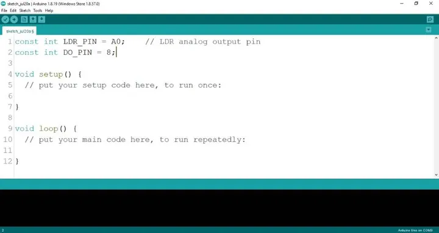
Step 4: Type const int RED_PIN = 5; as shown below in the image.
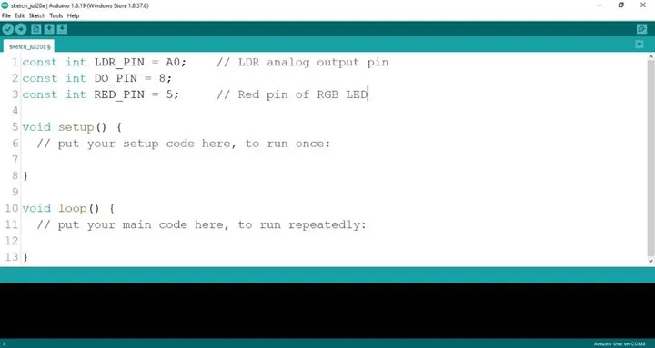
Step 5: Type const int GREEN_PIN = 6; as shown below in the image.
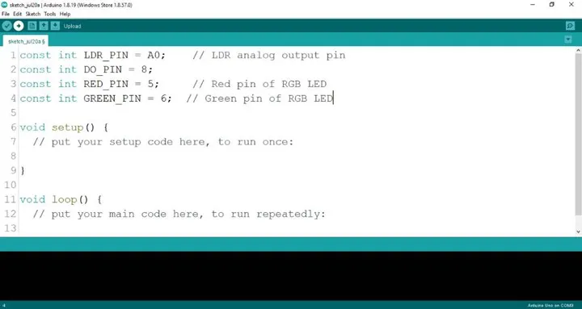
Step 6: Type const int YELLOW_PIN = 7; as shown below in the image.
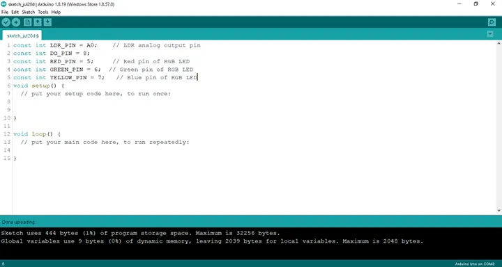
Step 7: Type int 1drValue; as shown below in the image.
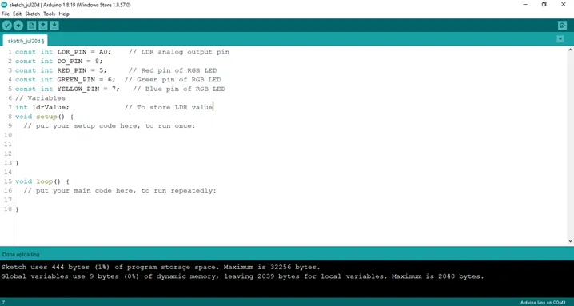
Step 8: Type int digitalValue; as shown below in the image.
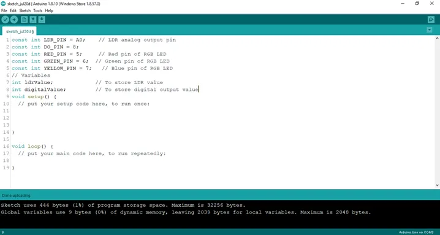
Step 9: Type int redValue, greenValue, blueValue; as shown below in the image.
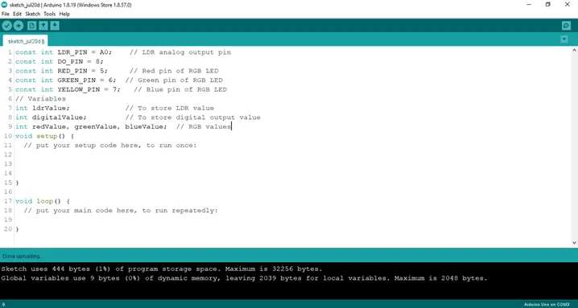
Step 10: Type pinMode (DO_PIN, INPUT); as shown below in the image.
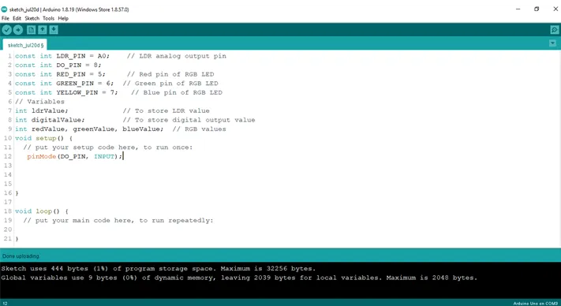
Step 11: Type Serial.begin(9600); as shown below in the image.
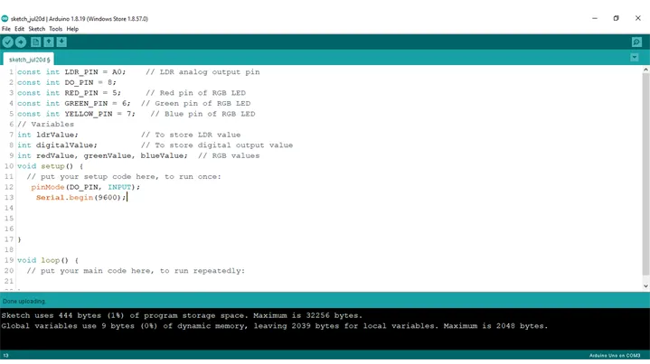
Step 12: Type pinMode (RED_PIN, OUTPUT); as shown below in the image.
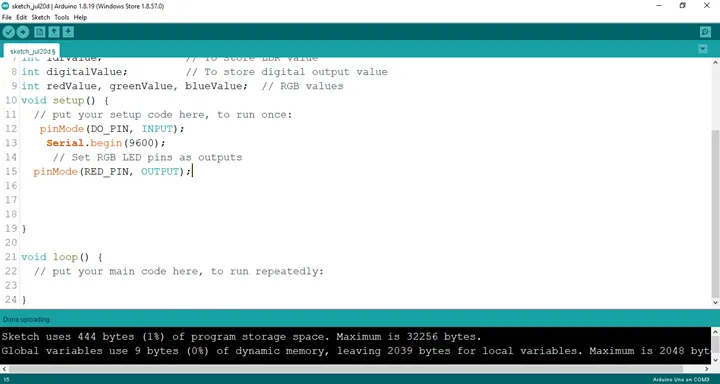
Step 13: Type pinMode (GREEN_PIN, OUTPUT); as shown below in the image.
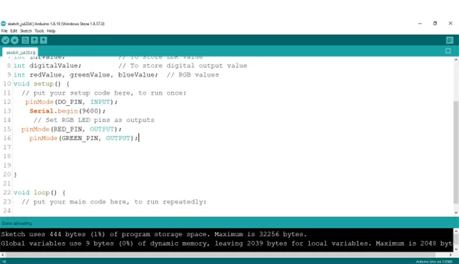
Step 14: Type pinMode (YELLOW_PIN, OUTPUT); as shown below in the image.
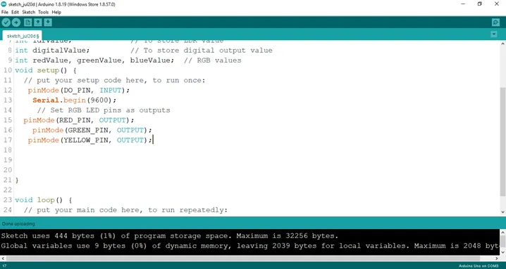
Step 15: Type
Serial.print (“Analog Value:”); Serial.printIn (ldrValue); Serial.printIn (“Digital Value:”); Serial.printIn (digitalValue); ; as shown below in the image.
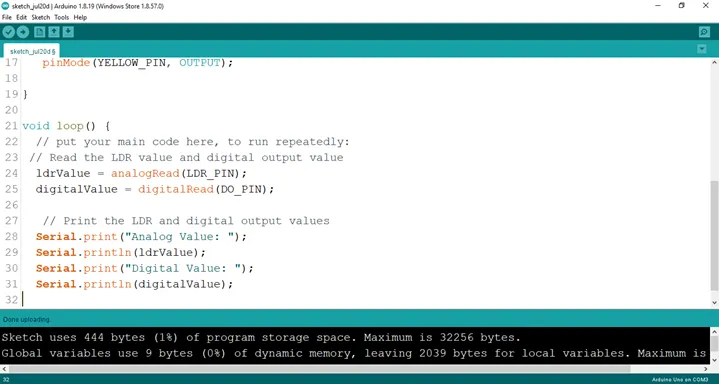
Step 16: Type
if (ldrValue < 100) { digitalWrite (RED_PIN, HIGH); delay (1000); digitalWrite (RED_PIN, LOW); delay (1000); digitalWrite (GREEN_PIN, HIGH); delay (1000); digitalWrite (GREEN_PIN, LOW); delay (1000); digitalWrite (YELLOW_PIN, HIGH); delay (1000); digitalWrite (YELLOW_PIN, LOW); delay (1000); } as shown below in the image.
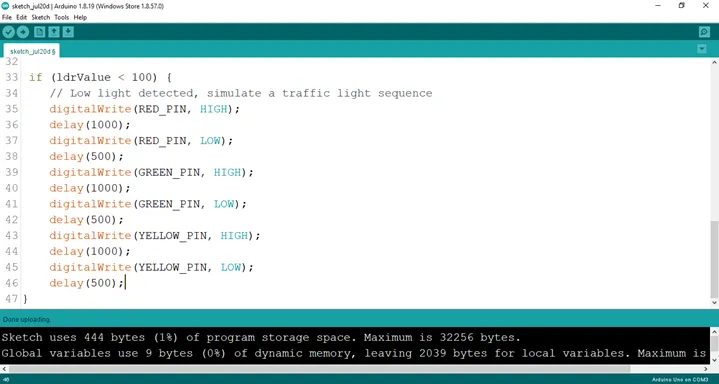
Step 17: Type
else { digitalWrite (RED_PIN, LOW); digitalWrite (GREEN_PIN, LOW); digitalWrite (YELLOW_PIN, LOW) ; } as shown below in the image.
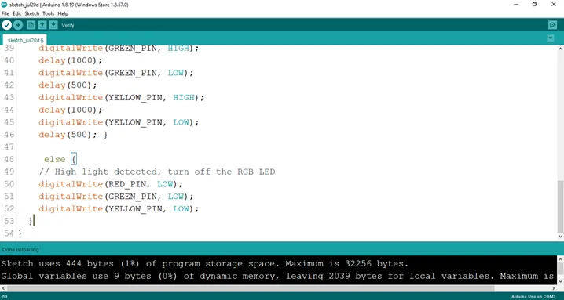
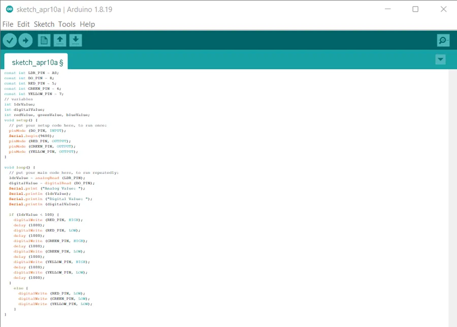
CONCLUSION
If you encounter any problems when trying to upload your code to the board, run through your code again to check for any errors or missing lines of code. If you did not encounter any problems and the program ran as expected Congratulations on a job well done. You have now learnt how to code the traffic light to change colors in the presence of light. Practice, as they say makes perfect. Continue to work hard and in time you’ll master it.